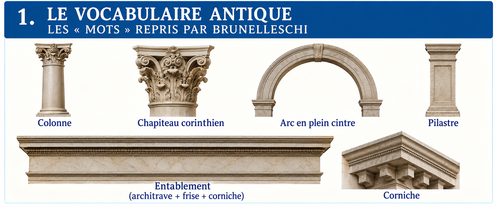
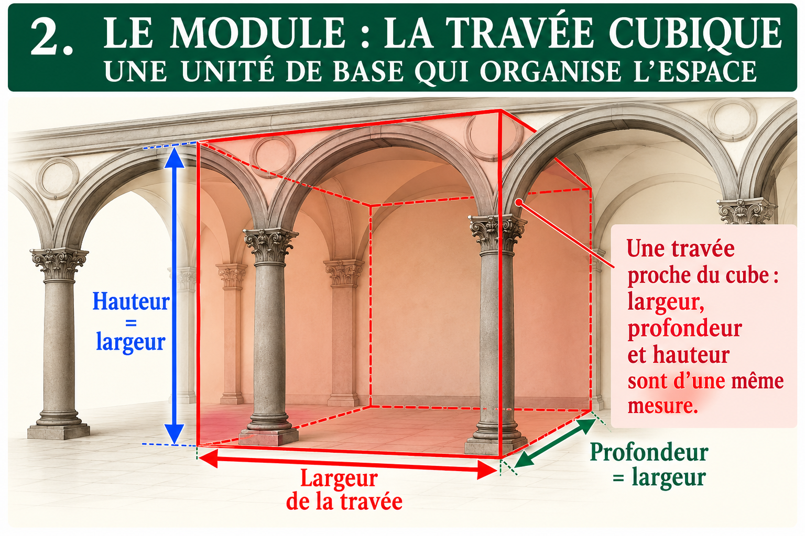
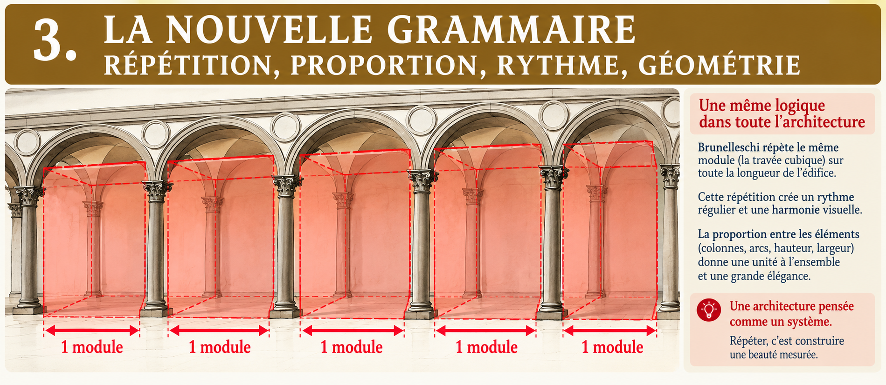
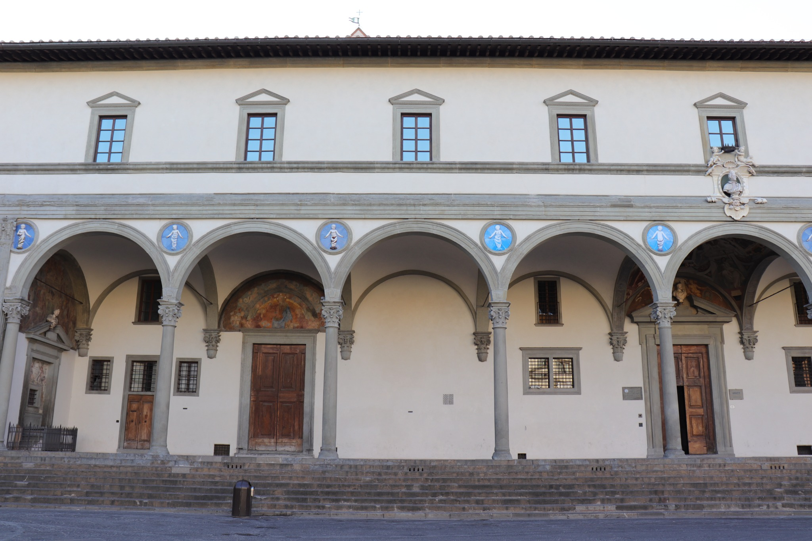
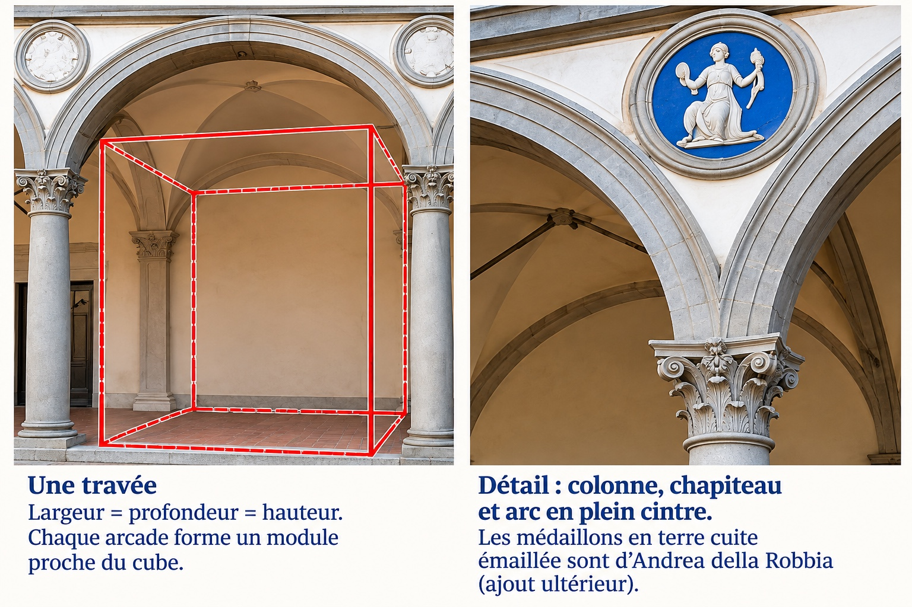
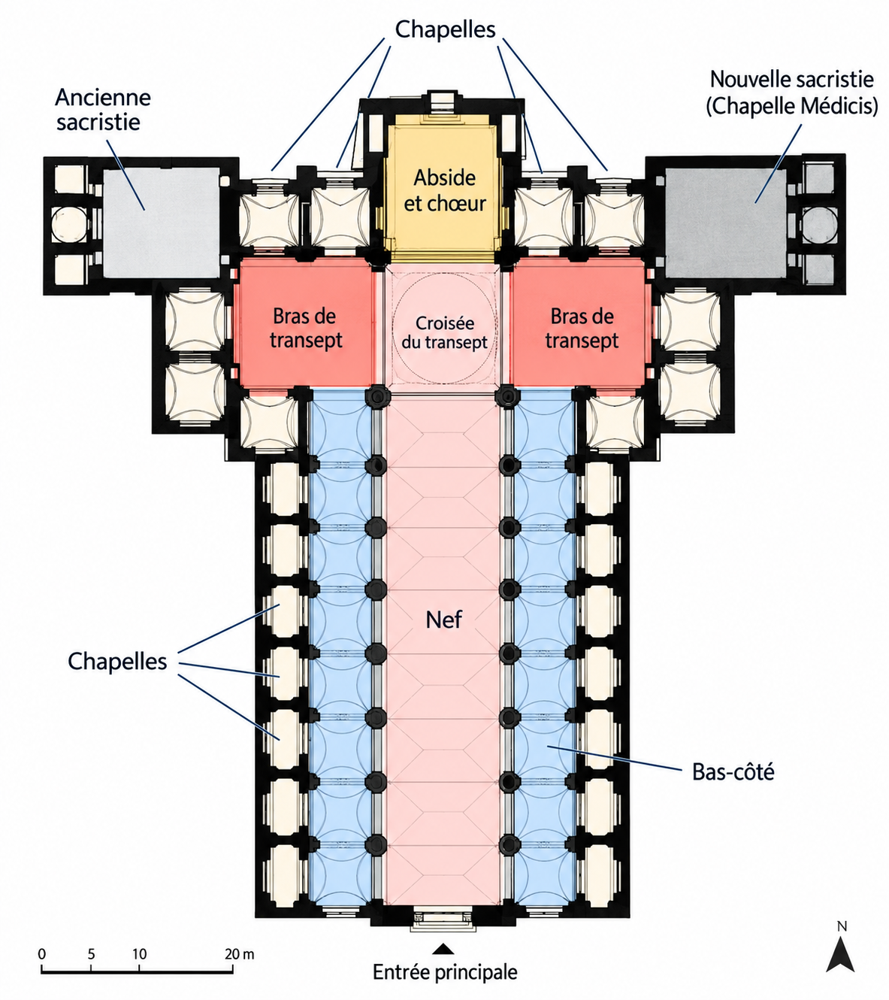
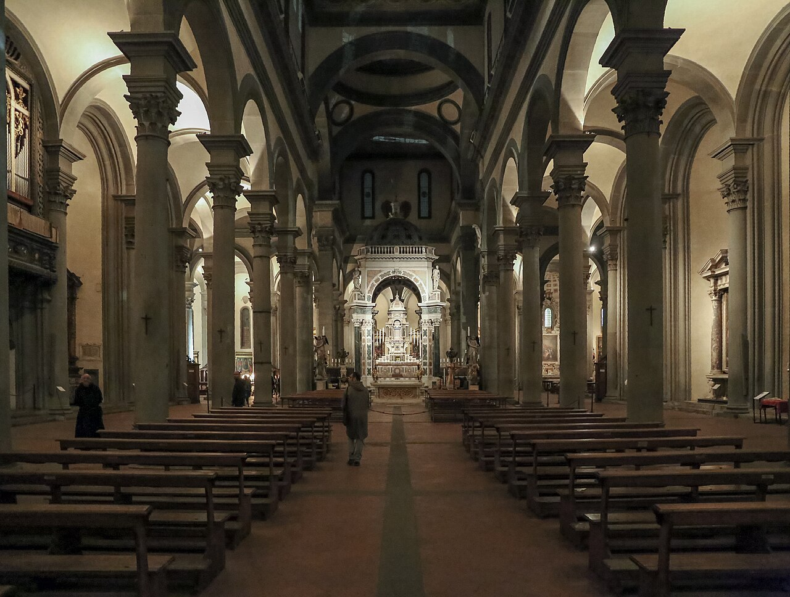
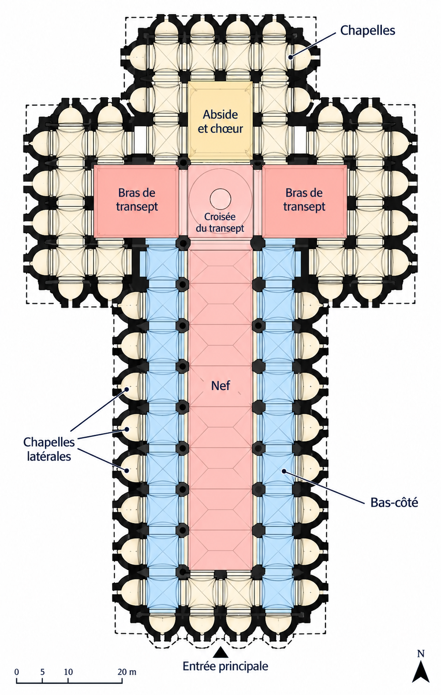
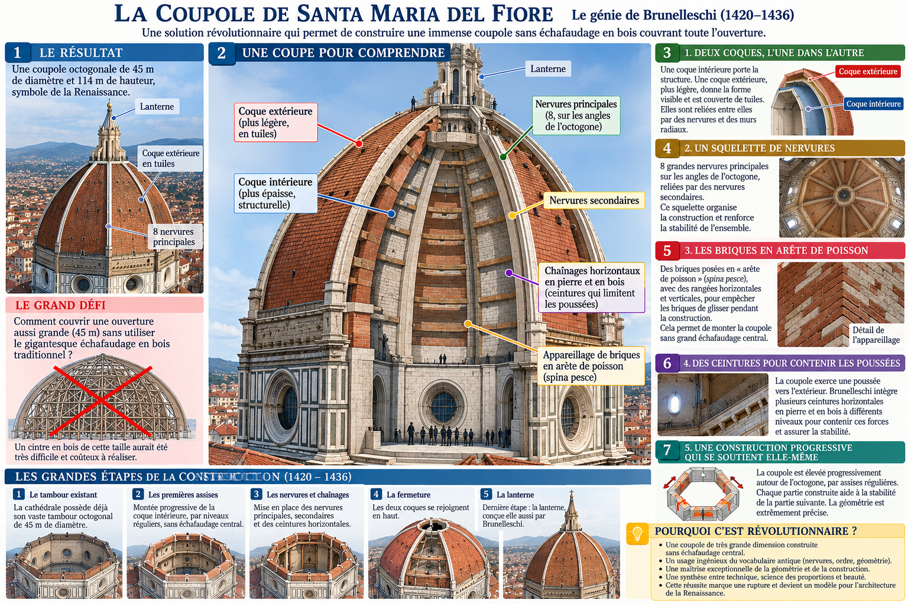

Filippo Brunelleschi
Trois monuments, une même idée
L’Antiquité fournit les mots ; la Renaissance invente une nouvelle grammaire. Avec Brunelleschi, colonnes, arcs et proportions organisent un espace clair, rythmé et mesurable.
Architecte et sculpteur florentin, Brunelleschi révolutionne l’architecture en retrouvant les proportions et les formes de l’Antiquité. Concepteur de la célèbre coupole de la cathédrale de Florence, il joue également un rôle essentiel dans le développement de la perspective géométrique.
Les mots de l’architecture antique
Brunelleschi réemploie un vocabulaire issu de l’architecture classique, mais l’assemble selon un système d’une grande régularité.

Colonne et chapiteau
La colonne porte les éléments supérieurs ; son chapiteau marque la transition.
Arc en plein cintre
Un arc en demi-cercle qui rythme les ouvertures.
Entablement et pilastre
Des éléments horizontaux et verticaux qui structurent visuellement l’édifice.
Le module : une mesure répétée
Imagine une travée comme une portion d’architecture dont les dimensions se répondent. À l’Hôpital des Innocents, largeur, profondeur et hauteur du portique sont conçues dans des rapports proches d’un cube : ce n’est pas un cube matériel, mais une façon de penser l’espace.


Hôpital des Innocents
Ospedale degli Innocenti · Florence
Le module devient visible dans le portique


Une succession d’arcades régulières rend le rythme immédiatement perceptible. Les colonnes et les arcs structurent la façade.
👁 Ce qu’il faut regarder
Regarde la distance entre deux colonnes, puis compare-la à la profondeur du portique. Les médaillons bleus en terre cuite émaillée sont postérieurs au projet initial de Brunelleschi.
Basilique San Lorenzo
Le module organise la nef


Plan documentaire chargé depuis Wikimedia Commons : une connexion Internet est nécessaire pour l’afficher.
Les colonnes de pietra serena, les murs clairs et les arcs réguliers conduisent le regard vers le chœur.
👁 Ce qu’il faut regarder
Observe comment le même ensemble colonne–entablement–arc se répète. Le plafond décoré et certains aménagements sont postérieurs à Brunelleschi.
Basilique Santo Spirito
Le système gagne en unité


Plan documentaire chargé depuis Wikimedia Commons : une connexion Internet est nécessaire pour l’afficher.
La répétition des travées se poursuit dans la nef et les bas-côtés ; le plan en croix latine unifie l’ensemble.
👁 Ce qu’il faut regarder
Cherche les mêmes proportions d’une travée à l’autre. Les chapelles semi-circulaires scandent le pourtour de l’édifice.
Et la coupole du Duomo ?
Brunelleschi n’a pas seulement renouvelé les proportions de l’architecture : il a aussi imaginé une solution technique remarquable pour élever la grande coupole de Santa Maria del Fiore. Une fiche dédiée permettra d’expliquer la double coque et la construction sans grand cintre général.
